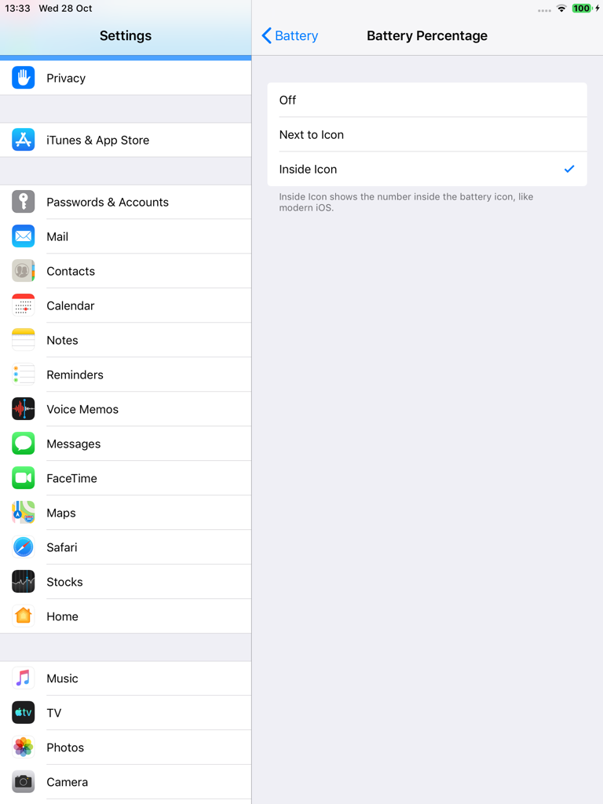
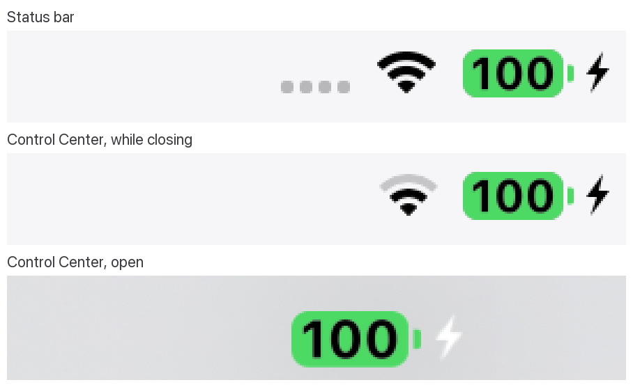

BatteryPlus (iOS 12)
On iOS 12, Apple keeps most battery features for iPhone. BatteryPlus brings them to iPad, in the iOS 12 style.
Low Power Mode gets its own page in Settings > Battery and, with CCSupport, a module in Control Center. It is the real iOS mode: mail fetch, iCloud Photos, dynamic wallpapers and other background work pause. Automatic Low Power Mode turns it on when the battery drops to 5, 10, 15 or 20% and off again at 80%; Low Power Mode you turn on yourself stays on until you turn it off.
Battery Percentage can be off, next to the battery icon, or inside it, like modern iOS, also in Control Center, where it matches the status bar exactly. Battery Health shows Maximum Capacity, Cycle Count and Manufacture Date from the battery itself, and an optional Unplug Reminder tells you when the iPad has charged to the level you choose.
Screenshots






Features
- Low Power Mode in Settings > Battery, as on iPhone, and in Control Center (needs CCSupport)
- Automatic Low Power Mode: on at 5, 10, 15 or 20%, off again at 80%
- Low Power Mode you turn on yourself stays on until you turn it off
- Battery Percentage: off, next to the icon or inside it, like modern iOS (also in Control Center)
- Battery Health: Maximum Capacity, Cycle Count and Manufacture Date
- Unplug Reminder at 80, 85, 90, 95 or 100%
- No timers: nothing runs while idle
Settings
Settings > Battery:
- Battery Percentage: Off, Next to Icon or Inside Icon.
- Low Power Mode: Automatic (Turn On Automatically, off; Turn On At 5% to 20%) and Manual (the Low Power Mode switch).
- Battery Health: Maximum Capacity, Cycle Count and Manufacture Date.
- Charging: Unplug Reminder (off) and Remind At (80% to 100%).
Control Center: Settings > Control Center > Customize Controls > Low Power Mode (needs CCSupport).
Compatibility
- Tested on iPad mini 2, iOS 12.5.8 (checkra1n + odysseyra1n / libhooker)
- Expected to work on other iOS 12 iPads; battery data depends on what each battery reports
- Control Center module: install CCSupport (recommended)
- No charge limit on A7 iPads, and Low Power Mode doesn't slow the CPU there
Changelog
Version 1.2.0
- Automatic Low Power Mode: turns on when the battery drops to 5, 10, 15 or 20%, and off again at 80%.
- Low Power Mode you turn on yourself stays on until you turn it off.
- Settings > Battery has a Battery Percentage page (Off, Next to Icon, Inside Icon) and a Low Power Mode page (Automatic, Manual). The Status Bar page is gone.
- Battery Percentage can be changed in Low Power Mode, which no longer forces it on.
- Percentage inside the icon: easier to read in Low Power Mode and while charging, and in Control Center it now looks exactly like the status bar, charging bolt included.
- Battery Colours removed: the battery uses iOS 12's own colours.
- Charging no longer shows the unavailable Charge Limit.
Version 1.1.0
- First public release.
- Low Power Mode in Settings and Control Center, status bar battery colours and the percentage inside the icon, alongside Battery Health and the Unplug Reminder.
Information
| Version | 1.2.0 |
| Developer | itsAllexB |
| Size | 31 KB |
| License | GPL-3.0 |
| Source code | GitHub |
| Problems | Report an issue |
Unofficial. Not affiliated with or endorsed by Apple.